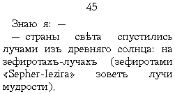
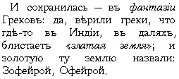
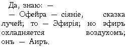
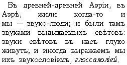
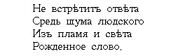
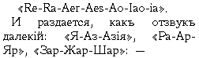
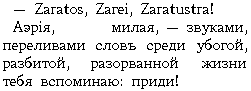

Glossolalia (Section 45)
GLOSSOLALIA

I know: --
-- lands of light descended in rays from the ancient sun: on the sephiroth-rays (Sepher-Yezira calls the rays of wisdom "sephiroth").
Where is she, Zephyria?
She perished.

And she was preserved -- in the phantasy of the Greeks: yes, the Greeks believed, that somewhere in India, in distant places, a "golden land" gleamed; and they called this golden land: Zopheira, Opheira.


In ancient-ancient Aeria, in Aer, once upon a time we lived -- sound-people; and there we were sounds of exhaled lights: the sounds of lights live silently in us; and sometimes we express them by a sound-word, by glossolalia.


"Re-Ra-Aer-Aes-Ao-Iao-ia."
And there resounds, like a faraway sound: "Ya-Az-Aziya" (I-I am-Asia),"Ra-Ar-Yar," Zar-Zhar-Shar": (Sunrise-Ashen heat-Sphereshaped): --

Aeria, dear one, -- I remember you in sounds, outpourings of words amidst the god-forsaken, beaten, torn apart life: come!